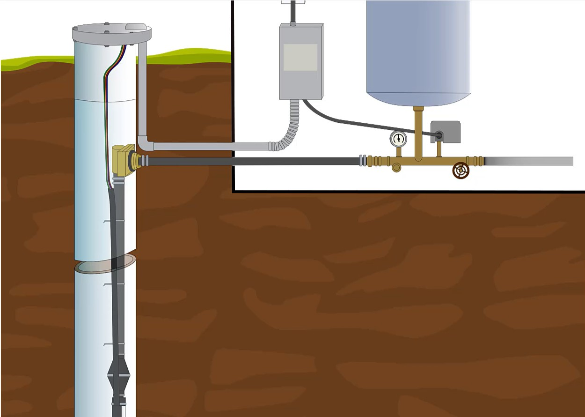

Applied Technical Training
A collection of plumbing training video samples created for larger technical courses, focused on clear procedures, detailed visuals, and concise explanation.

Technical training works best when each step is concrete, visible, and easy to follow.
These video samples were created as part of larger plumbing training courses. Unlike soft-skills training, technical instruction depends on specificity: showing the right component, naming the right action, sequencing the steps clearly, and avoiding vague explanations.
My role was to break down concrete procedures and technical concepts into concise, visual instruction. The goal was not to make the content flashy. The goal was to make the process easier to understand and apply.
The samples below demonstrate technical scripting, visual sequencing, and instructional clarity for learners who need to understand what to do, what to look for, and why each step matters.
Four examples of procedure-focused technical instruction.
Objective
The objective was to create technical training videos that helped learners understand specific plumbing procedures and concepts through clear visuals, concise narration, and concrete step-by-step explanation.
The videos needed to support practical understanding, not broad awareness. Learners needed to see what mattered, follow the sequence, and connect each step to the real task.
Process
I approached each video by identifying the essential actions, visuals, and terms learners needed in order to understand the procedure. Technical training requires precision, so the scripting focused on what learners needed to see, what they needed to do, and what they needed to remember.
The visual design emphasized specific components, physical relationships, and procedural flow. Rather than relying on abstract explanation, each segment used concrete imagery and concise points to reduce confusion.
Because these videos were part of larger courses, each sample had to work as a focused instructional piece while still fitting into a broader learning sequence.
Outcome
The final videos provided clear, usable technical instruction that supported learners as they moved through larger plumbing courses.
This project demonstrates my ability to design for technical subject matter where accuracy, sequencing, visuals, and concise explanation matter more than broad conceptual discussion.